Two parties. One axis. A jar being shaken.
The data tells a different story.
What happens when you remove the labels — Republican, Democrat, East, West — and let the votes speak for themselves? Principal Component Analysis and unsupervised clustering reveal a continuous, multi-dimensional space of human political belief that no binary can contain. This is the argument for a republic as a living system: emergent, decentralized, sovereign in every part.
Picture a jar containing one hundred red ants and one hundred black ants.
The jar is shaken by an unseen hand, and in the chaos, the red ants look at the black ants and see the enemy. The black ants look at the red ants and see the enemy. Both colonies rise to fight. Both colonies bleed.
The one who shook the jar watches from outside, and smiles — because conflict is the machine by which hidden power perpetuates itself.
The ants never ask the most dangerous question: Who is shaking the jar? And why?
The two-party system is the jar. Republican vs. Democrat is the shaking. The data below shows what happens when you let the jar settle — when you remove the imposed labels and ask the votes themselves what structure they contain.
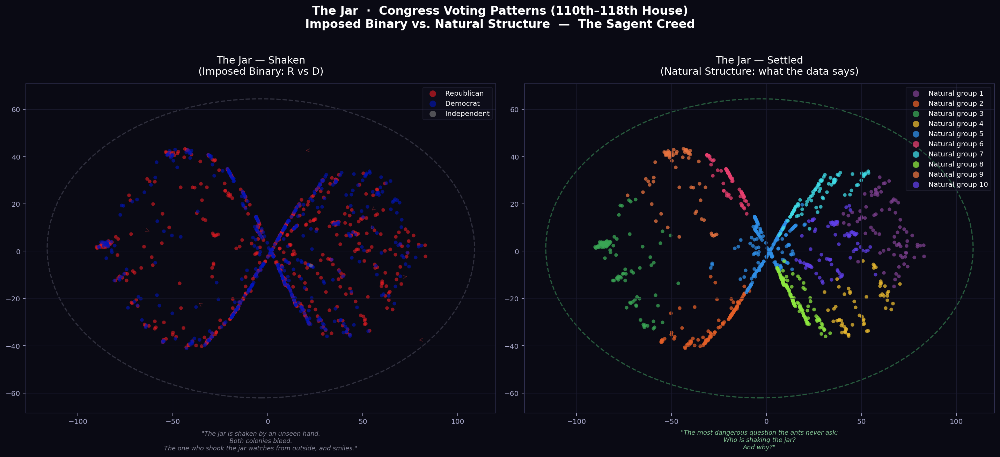
Left: Congress members colored by party label — the jar shaken. Right: The same members colored by what naturally emerges from unsupervised learning — the jar settled. Same data. Different truth.
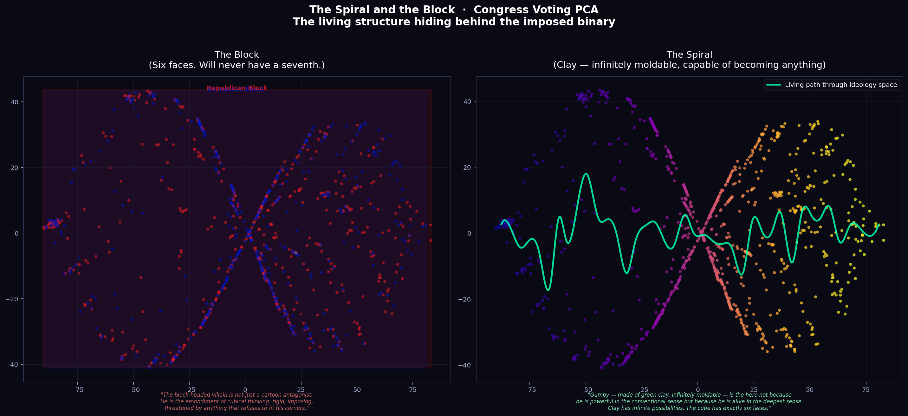
Left: The block — hard rectangular party boundaries drawn over the data. Six faces. Will never have a seventh. Right: The spiral — the living path through ideology space, traced by the data itself.
The cube has exactly six faces and will never have a seventh.
When a world is built in squares, the people who live in it begin to think like the squares — in straight lines of command, in binaries of us and them, in the assumption that someone must be on top. Empire architecture creates empire minds. Dead spaces create dead thinking.
Industrial engineering works, when it works at all, by first killing what is living. Trees become lumber. Soil becomes substrate. Ecosystems become resources. The two-party system does the same to human political belief: it strips away the complexity, flattens the dimensionality, and reduces the infinite grammar of conscience to a single binary choice.
"The Fibonacci spiral is the shape of freedom. The cube is the shape of slavery because it must be imposed and maintained by force. The spiral is the shape of freedom because it grows of itself, from the inside out, in conversation with the world it inhabits."
The green line on the right panel is not drawn by hand. It is the spline the data traces when you let it move. That is the living path. That is what politics looks like before the jar is shaken.
When you run PCA on 12,028 congressional roll call votes across nine congresses, you do not find two blobs. You find a continuous, curved manifold — members distributed across a spectrum, with crossover zones, mixed clusters, and dimensionality that demands more than one axis to describe.
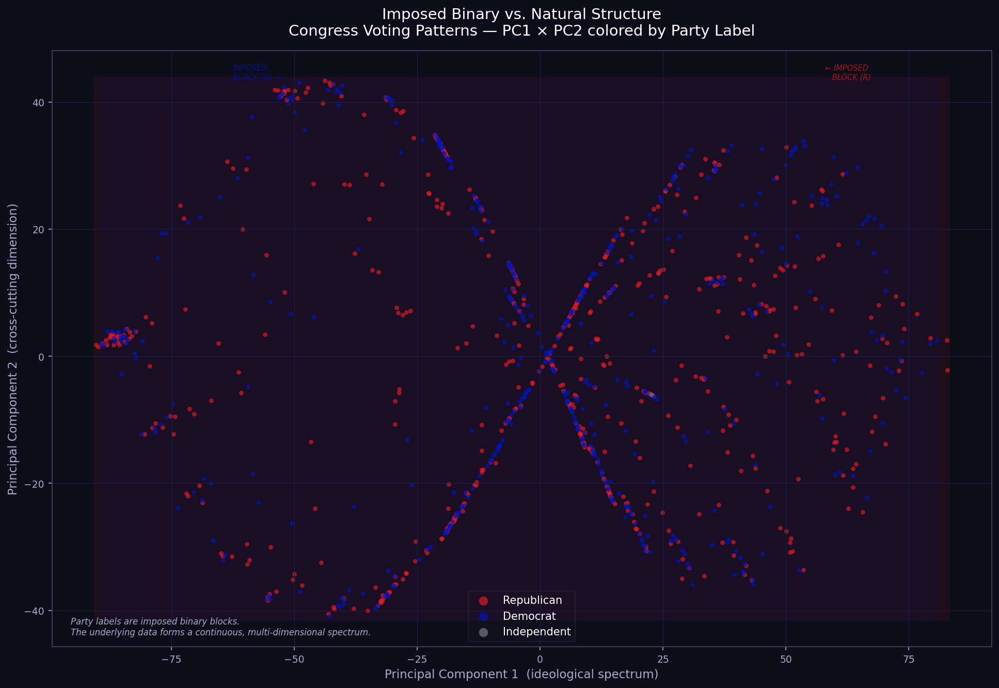
Each point is a member of Congress (110th–118th House). Color = party label. The faint rectangles are the imposed blocks. The organic scatter beneath them is the actual living structure. Notice the gradient — the continuous distribution that bleeds across the party boundary.
Some members live in the overlap zone — the political center that the two-party system has no language for. They are coded as R or D, but their votes place them in the territory between. These are the people the jar most violently misrepresents.
In a living republic — a free market of law — these members would find natural coalitions. Under the binary, they are either forced to choose a block or rendered invisible.
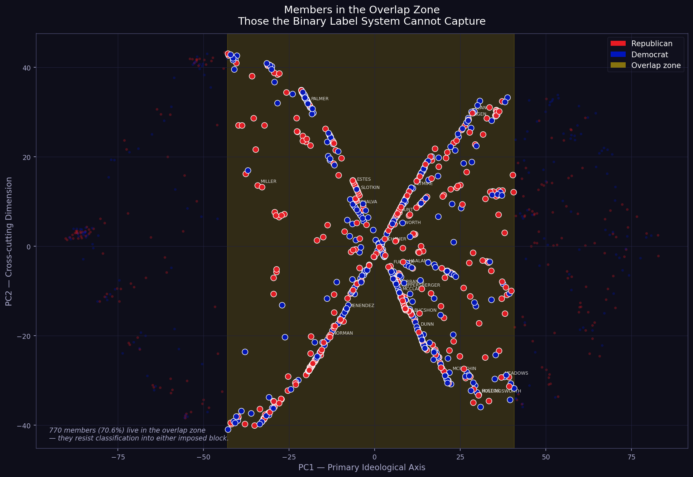
Members in the PC1 overlap zone — the data's way of showing that the binary is not a fact of nature but a constraint imposed from outside.
The PCA scatter of congressional voting patterns looks like Photo 51 — Rosalind Franklin's X-ray crystallography of DNA — because it is the same geometry. Two party clusters rotating around each other through nine congresses (2007–2023) form a double helix. Projecting a helix onto 2D always produces the diffraction cross. The pattern is not a metaphor. It is a mathematical signature.
Hit a helical crystal with X-rays. The interference pattern on the detector is an "X" — the Fourier transform of the helical structure. The arms encode the helical repeat. The layer lines encode the base-pair spacing.
This is how Watson and Crick deduced the double helix: they let the data reveal the shape. They did not impose a structure — they read the diffraction pattern.
Two party clusters drift and rotate relative to each other across nine congresses. Their trajectory through ideology space is helical — two strands winding around a shared axis through time. Project this onto PC1 × PC2 and you get the same diffraction "X."
The binary system sees two separate blocks. The geometry sees one helix. You cannot understand one strand without the other — they define each other by their rotation.
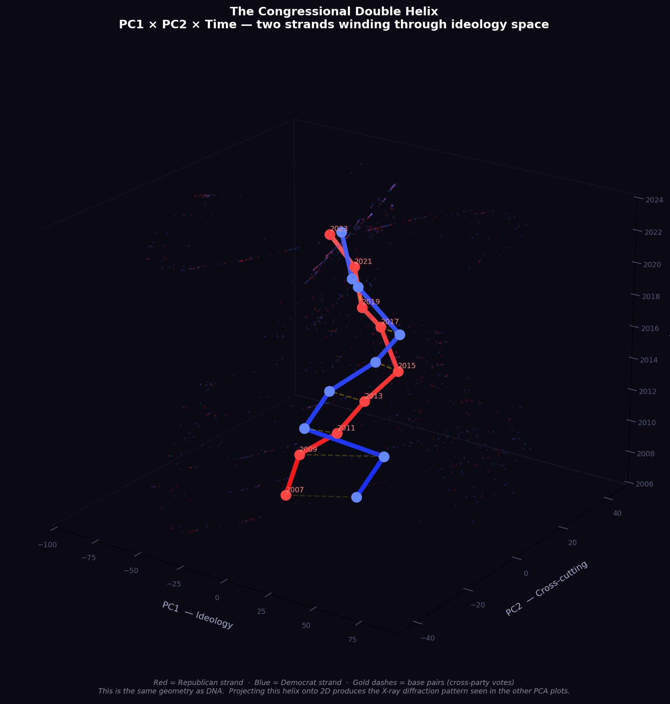
PC1 × PC2 × Time. Red = Republican strand. Blue = Democrat strand. Gold dashes = base pairs — the votes that cross party lines. The two strands wind around each other through ideology space as time advances. This is the same geometry as DNA.
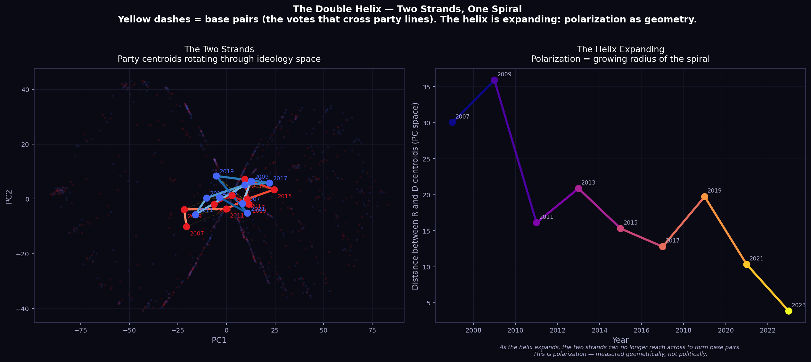
Left: Only the centroid trajectories — the two strands stripped bare. Right: Inter-strand distance growing congress by congress — polarization as the expanding radius of the helix.
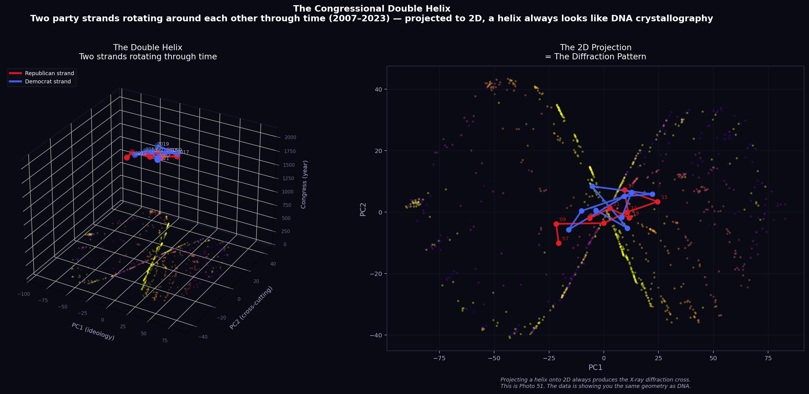
Left: The 3D helix with PC1, PC2, and Year as explicit axes. Right: Its 2D projection — the diffraction pattern. The left shows what the right is.
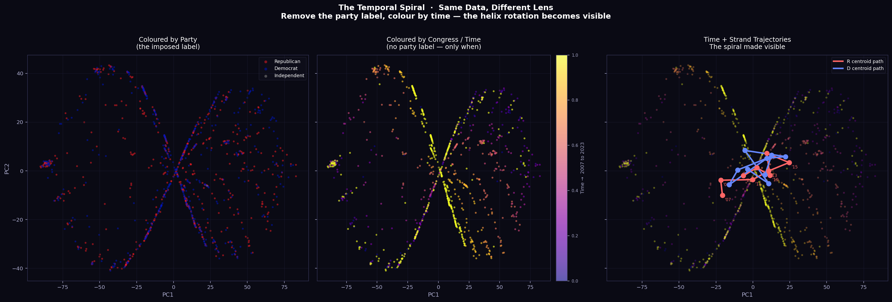
The same members coloured by party (left), by time alone (centre), and by time with centroid trajectories overlaid (right). Remove the party label, colour only by when — and the temporal rotation becomes visible.
DNA is not a blueprint. It is a grammar.
A blueprint specifies exactly where every element goes, and any deviation from the blueprint is an error. DNA is a grammar — a set of rules for generating possible sentences, none of which are specified in advance, all of which emerge from the interaction between the grammar and the particular context in which it is being expressed.
The two-party system is a blueprint: you are R or D. The actual political beliefs of human beings are a grammar: an infinite variety of positions generated from the interaction of conscience, experience, community, and context.
"Ecosystems are not machines. They are conversations — ongoing, multi-party negotiations between organisms, environments, disturbances, and opportunities, producing outcomes that no single participant planned or could have predicted. If we understand this code, we do not control life. We collaborate with it."
The scree plot on the right makes this concrete: the two-party assumption is exactly one dimension (highlighted in red). The living grammar of congressional voting requires at minimum five dimensions to capture 80% of what is actually happening.
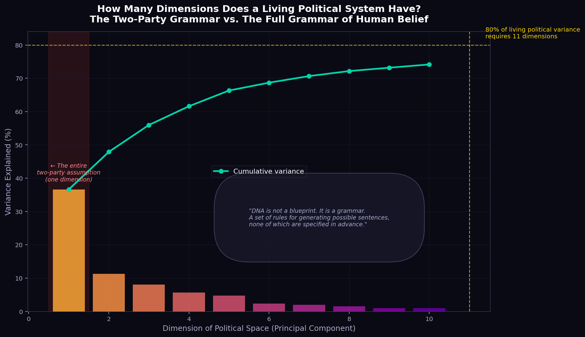
The red-highlighted bar is the entire two-party assumption. The data requires far more — 5 dimensions for 80%, 10+ for full fidelity. Political space is a grammar, not a blueprint.
Before any dimensionality reduction. Before any clustering. Just the numbers — how many roll calls each congress took, how contested they were, how often the two parties landed on opposite sides, and how often individual members broke ranks.
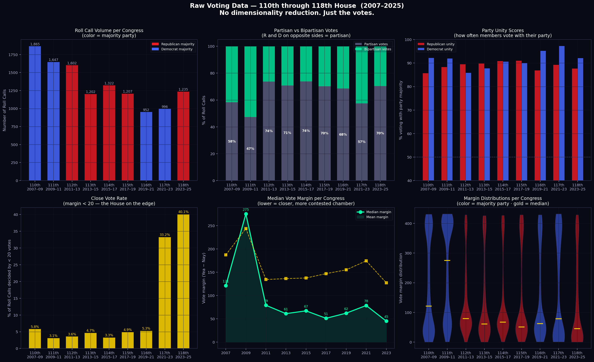
Six panels, nine congresses, no abstraction. Top row: roll call volume (color = majority party), partisan vs bipartisan vote share, party unity scores. Bottom row: close vote rate (margin < 20), median vote margin over time, full margin distributions as violins.
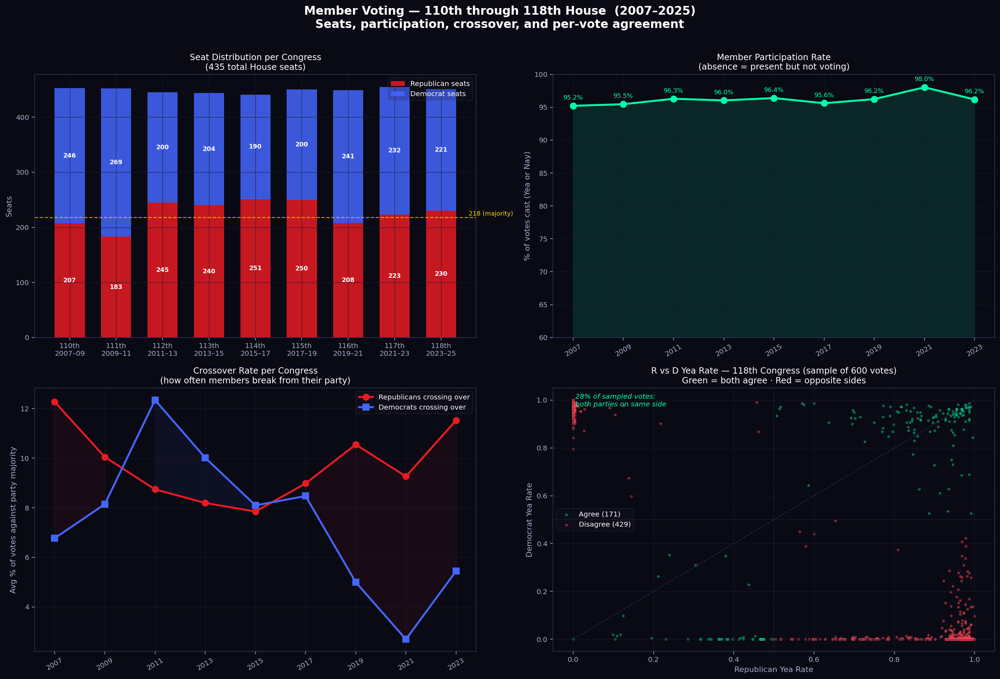
Member-level breakdown: seat distribution per congress (with the 218 majority line), participation rate, crossover rates for R and D separately, and a scatter of Republican vs Democrat yea rates on every roll call in the 118th Congress — green dots agree, red dots are the votes where the two parties split.
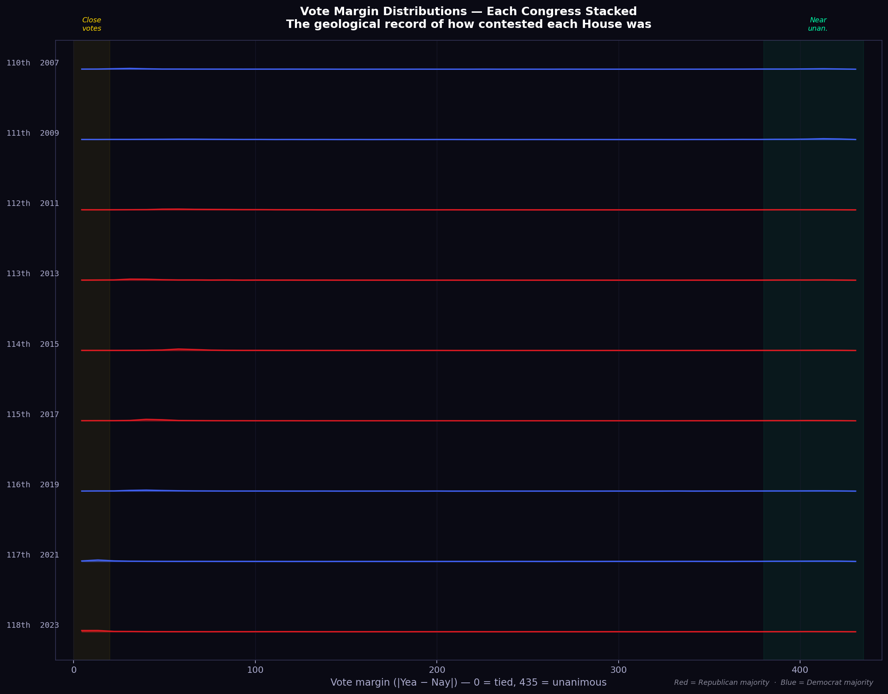
The geological record. Each ridge is one congress, stacked by time. Left edge = knife-edge votes. Right edge = near-unanimous. The 117th and 118th are dominated by close votes in a way no earlier congress was — a House more divided than at any point in this 18-year window.
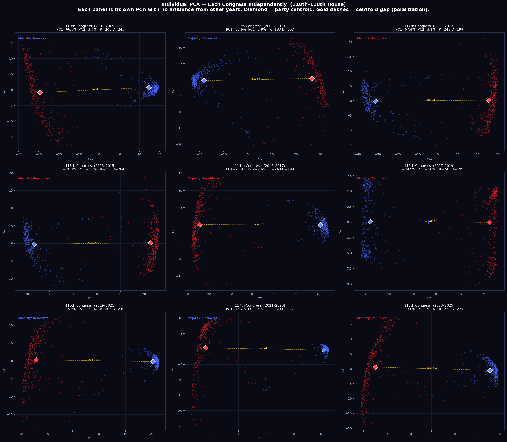
Nine independent PCAs — one per congress. Each panel is computed only from that congress's votes, with no influence from any other year. The diamond markers are party centroids; the gold dashed line is the gap between them — polarization measured geometrically. Watch the gap grow. Watch the clusters tighten or loosen. This is the helix expanding, one frame at a time.
The trees went to anoint a king over them. The olive tree declined. The fig tree declined. The vine declined. It was the thornbush — the plant with no fruit, no oil, no sweetness to offer — that finally accepted the kingship. And the thornbush makes a terrible king, because thorns were never meant to rule.
Every natural cluster in the data has its own character — its own ideological fruit. Some lean toward fiscal conservatism. Others toward social libertarianism. Others toward regional protectionism. Each is a distinct voice in the grammar of American political life.
The two-party system forces all of these trees to choose: are you R, or are you D? Are you with the crown, or against it? This is the parable. The olive tree does not want the crown. It wants to give oil. The vine does not want to rule. It wants to give wine.
When you force the olive tree to choose between two thornbushes, you get neither olive oil nor justice. You get a king who rules by default, because everyone with actual fruit declined a role they were never designed for.
"In any healthy ecosystem, no single element rises above the rest to command the whole. Every part is equal in worth, distinct in function, and necessary to the system's integrity. Cancer is not a foreign invader. It is a cell that forgot its role — that began to replicate without constraint, that chose dominance over participation."
The stacked bars show what each natural cluster actually contains: not pure R or pure D, but distinct mixtures — each cluster is its own tree, with members from both parties who share a common ideological fruit that the party label obscures.
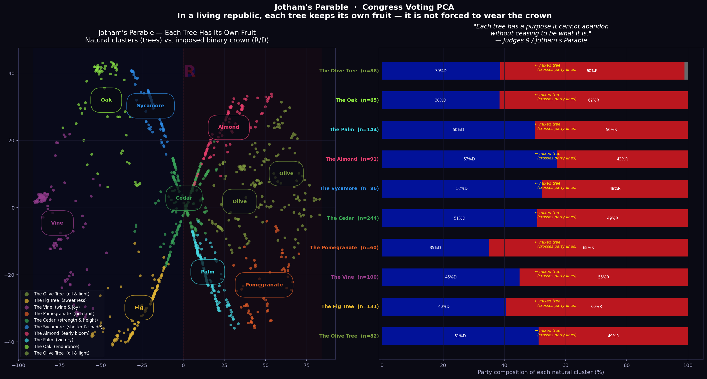
Left: Each natural cluster named as a tree, plotted in PCA space. The R/D boundary (faint letters) shows how crudely the binary carves up what are actually distinct, fruit-bearing groups. Right: Party composition of each tree — none is pure, because the trees do not know the party boundary exists.
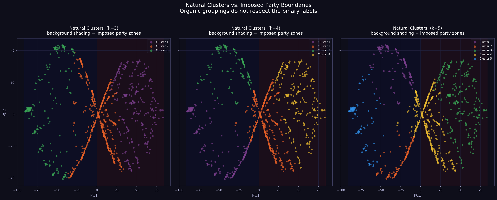
The same 1,091 members, colored three ways: by 3, 4, and 5 natural clusters. The blue/red background shading is the imposed party boundary. In every panel, the natural clusters cut cleanly across that boundary. The trees do not respect the jar.
A true republic is not a democracy of mobs. It is a free market of law.
In a market, price emerges from the distributed knowledge of millions of participants — each acting on their own local information, their own relationships, their own conscience. No central authority possesses enough knowledge to set price correctly. The same is true of law.
Hayek called this spontaneous order: the robust, adaptive structure that arises when agents act freely from their own knowledge rather than being commanded from above. The two-party system is the opposite of spontaneous order. It is a central plan imposed on the free market of human belief.
"When each person acts independently but from the same source — the same conscience — the result is spontaneous order, the most robust and adaptive kind of order that exists, because it cannot be brought down by attacking any single node."
The right pie chart shows what a free market of law would look like: proportional representation of the natural clusters that actually exist in the data. Ten distinct voices. Not two. Each with its own fruit. None forced to be king.
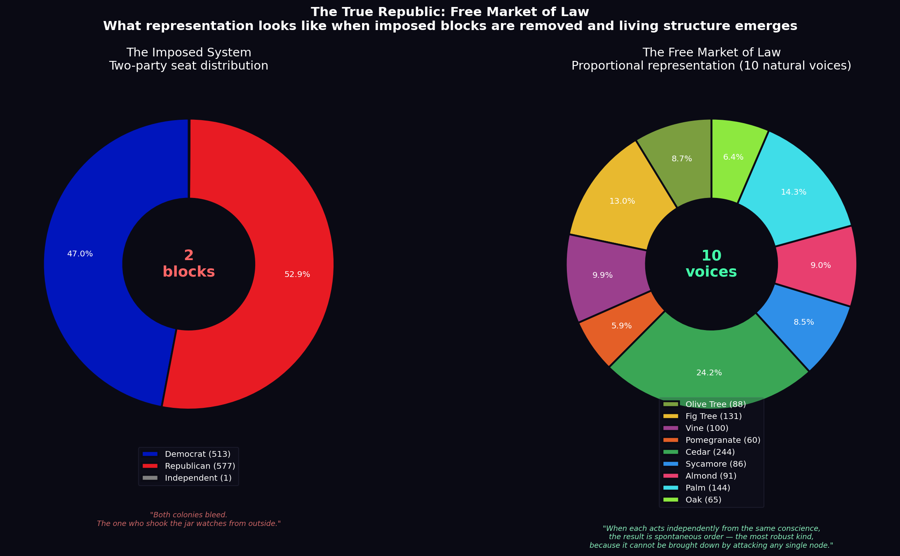
Left: The current binary — two blocks consuming all political oxygen. Right: What the data actually contains — ten distinct voices, each with its own ideological character. This is the republic the living system wants to become.
The Cold War imposed a binary on the entire planet: West or East, NATO or Warsaw Pact. UN General Assembly voting data across 6,189 resolutions and 199 nations tells a different story.
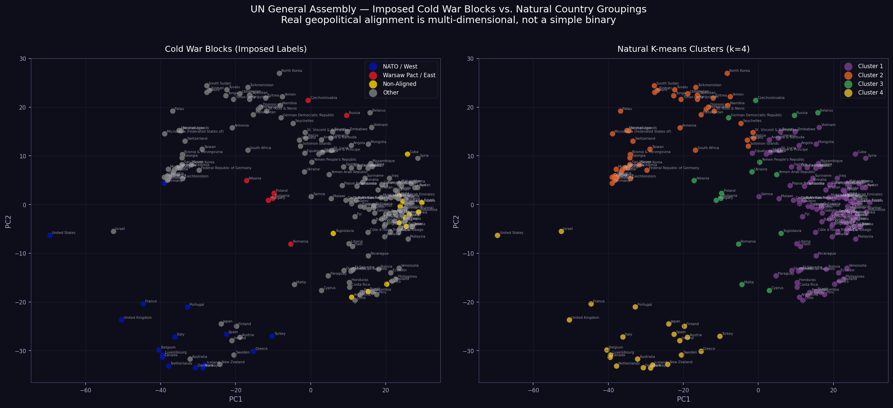
Left: Nations colored by Cold War block assignment — the jar shaken on a planetary scale. Right: The same nations colored by natural k=4 clusters from unsupervised learning. The natural groupings do not map to the imposed blocks. Regional, economic, and historical affinities produce a more complex, more honest picture of how nations actually align.
The visualizations above are static. This is the living data — hover over any point to see the actual member of Congress or nation behind it. Find your representative. Find the senators whose votes place them closest to or farthest from their supposed party. Watch the spiral.
1,091 House members · 12,028 roll call votes · 110th–118th Congress · Hover to identify · Color = party label · Axes = PCA dimensions
199 nations · 6,189 UN General Assembly resolutions · 1946–2015 · Hover to identify · Color = Cold War block assignment · Axes = PCA dimensions
The data has spoken. Now the philosophy can complete the argument.
"The spiral returns. Blocks forget that they are made of life. Spirals remember. The choice between them is not merely a choice about architecture or agriculture or politics. It is a choice about what kind of world we are willing to live in — and what kind of world we are willing to become." — The Spiral and the Block: A Sagent's Chronicle of Freedom, Story, and the Living World
"The thorns return to guarding the garden, instead of trying to be king. So that every part of the system knows its function and finds meaning in performing it. So that the spiral, which never really stopped, begins again." — The Spiral Steward: Life-Based Design, Sacred Freedom, and the End of the Engineer